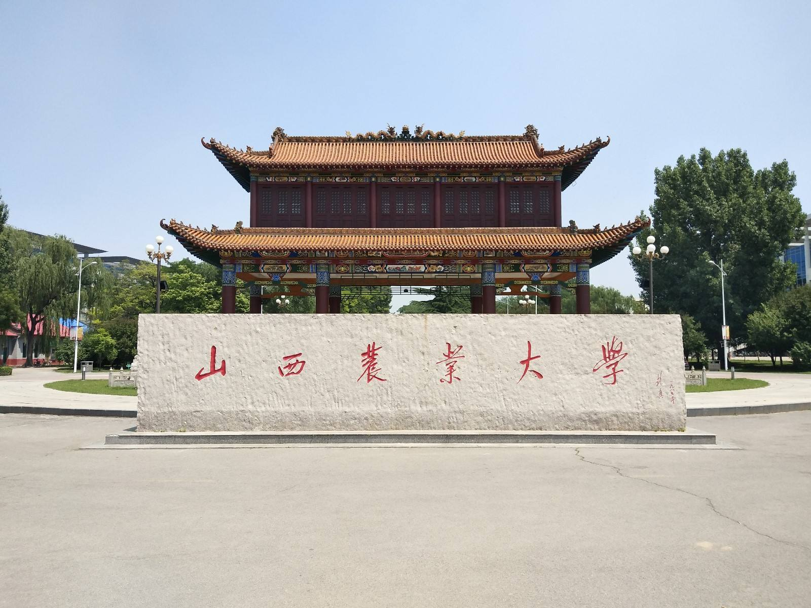

山西农业大学（Shanxi Agricultural University），简称山西农大，由山西省人民政府与中华人民共和国农业部共建，是山西省唯一的农业高校，首批获得硕士学位授权、第七批获得博士学位授权的高校之一，改革开放初99所全国重点大学之一，首批“卓越农林人才教育培养计划”试点高校，教育部本科教学评估优秀高校，全国首批深化创新创业教育改革示范高校，山西省高等教育综合改革试点高校。
山西农业大学是我国著名的高等农业学府，建国前山西省两所本科高校之一，首批获得硕士学位授权、第七批获得博士学位授权的高校之一，教育部本科教学评估优秀高校，省政府与农业部共建高校，全国首批深化创新创业教育改革示范高校，国家中西部基础能力建设入选高校，全国农业农村信息化示范基地，山西省高等教育综合改革试点高校，山西省第二批省级大众创业万众创新示范基地。
百年学府，历史厚重。学校始建于1907年孔祥熙创办的私立铭贤学堂，后发展为私立铭贤农工专科学校、私立铭贤学院，与山西大学堂一起，开创了山西近代高等教育的先河；1951年改私立为公办，成立山西农学院；1979年更名为山西农业大学，成为改革开放初全国99所重点大学之一。在111年的办学实践中，学校立足山西，面向全国，服务“三农”，不断提高人才培养质量、科技创新水平和社会服务能力，推进文化传承与创新，为山西乃至全国的经济建设和社会发展作出了重要贡献，铸就了“崇学事农、艰苦兴校”的办学精神，积淀了“甘于奉献、敬业乐教”的教风，培育了“勤奋学习、注重实践”的学风, 锤炼了“追梦、实干、吃苦、钻研、坚韧”的大学生创业精神。学校先后培养了13万余名各类人才，遍布大江南北，各行各业。学校培养了一大批革命家、政治家和党政干部，如太谷地区最早的共产党员张维琛，原中国革命军事博物馆副馆长赵振鑫、国务院外事办公室副主任郝德青、中央党校副校长侯维煜、外交部纪委副书记朱霖、八路军129师新编第10旅30团政委马定夫、吉林省委书记王大任、河南省委书记张树德、北京农业大学校长安民、政治局委员（天津市委书记）谭绍文、山东省委书记高克亭、交通部部长李清、国家海洋局局长罗钰如、山西省政协主席郑社奎、山西省政协主席金银焕、山西省纪委书记冯芝茂、山西省政协副主席汤祊德、山西省政协副主席聂向庭、山西省人大副主任张铭等；培养了一大批科学家，如2012年国家最高科技奖获得者郑哲敏，中科院院士王志均，中科院院士席承藩，中科院院士郭承基，工程院院士朱尊权，中科院院士庄文颖，中科院院士高福，全国著名大豆育种专家王绶，养猪专家张龙志，养羊专家吕效吾，养牛专家冀一伦，联合国粮农组织助理总干事王韧等。